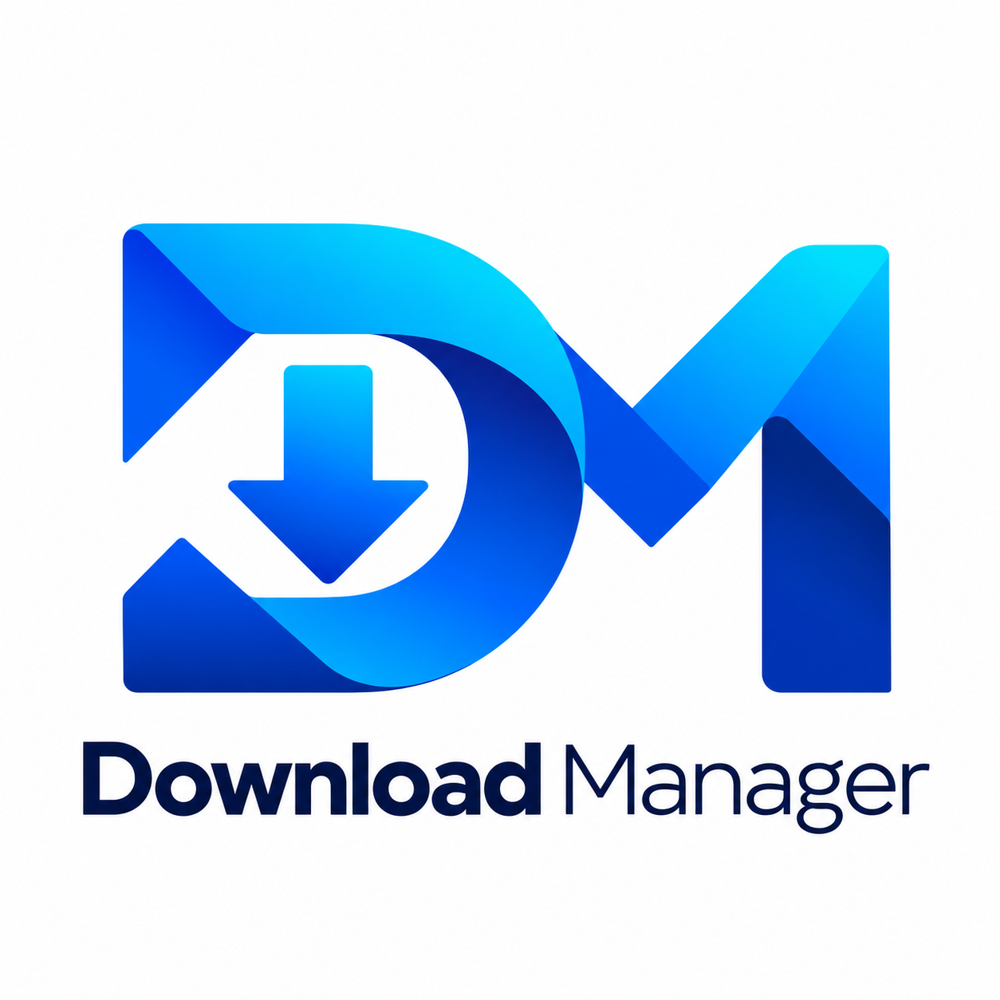
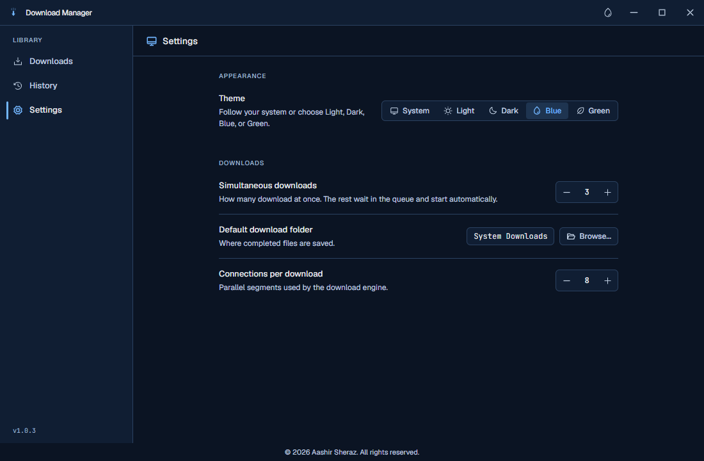

Parallel connections
Use multiple connections for compatible file downloads. Speed depends on the server and your connection.

Download ManagerFree for Windows
Keep files, media and browser downloads together in one desktop app.

Windows 10 / 11 64-bit Intel & AMD
Current release 1.0.3
Price Free to use
Installer 236 MiB
Start with a link. Keep track of your queue, choose your settings, and let the app work in the background.
Use multiple connections for compatible file downloads. Speed depends on the server and your connection.
Send links from Chrome or Edge using the included companion extension. One-time browser setup is required.
See progress and history, choose a download folder, and set how many downloads run at once.
Choose Light, Dark, Blue or Green, or follow your system. Closing the window keeps the app in the tray.
The installer includes the app and media tools. No separate Node.js, Python or FFmpeg installation is needed.
Release notes & checksumsGet the Windows installer above, run it, then select Run Download Manager. It installs for your Windows user without admin rights.
Right-click the app's tray icon and choose Set up browser extension. Copy the extension folder path from the dialog.
Paste the address into your browser. Enable Developer mode, choose Load unpacked, and select the extension folder. Repeat for each browser profile.
Paste a link in the app or send it using the extension. Automatic browser handoff can be enabled in the extension popup.
Yes. Anyone can use Download Manager for free. The app remains copyrighted by Aashir Sheraz; third-party components retain their own licenses.
This installer is for Windows 10 and 11 on 64-bit Intel or AMD PCs. It is not a 32-bit, macOS, Linux or native Windows ARM build. Installation was tested on Windows 10.
The current installer is unsigned, so Windows may show an unknown-publisher or reputation warning. Download from this website's GitHub release and compare the SHA-256 checksum. A checksum confirms file integrity; it is not a publisher signature.
A fresh install enables background startup after Windows sign-in. You can change Start with Windows in the tray menu. Closing the window keeps the app active; choose Quit from the tray to stop it.
The extension files come with the app, but Chrome and Edge require the one-time Load unpacked step above. It is not currently published in a browser extension store. After an app upgrade, reload the extension or restart the browser.
Media extraction depends on support for the website and format. Protected or sign-in-only media may not work. Only download content you have permission to save.
This page has no analytics, advertising, forms or tracking cookies. GitHub hosts the website and installer and may process request information under its privacy statement. Download requests go to GitHub. Support email uses your email provider.
Include your Windows version, app version, and a description of the problem. Avoid sending passwords or private download links.